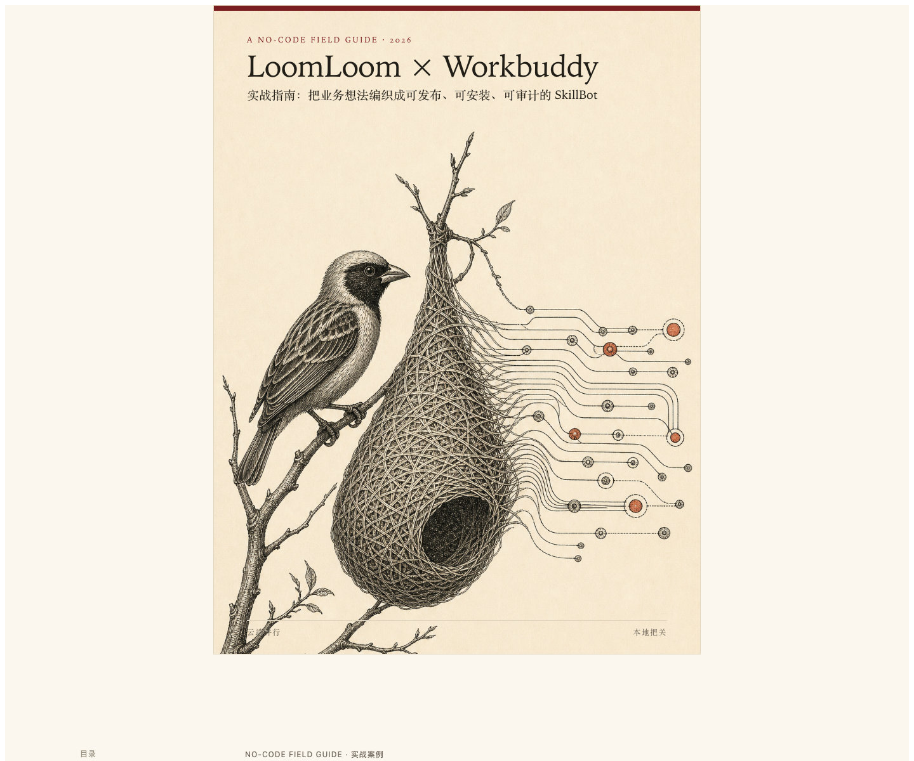
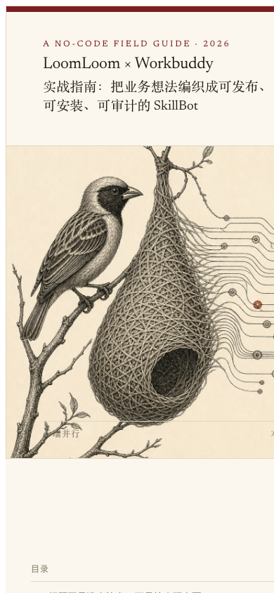
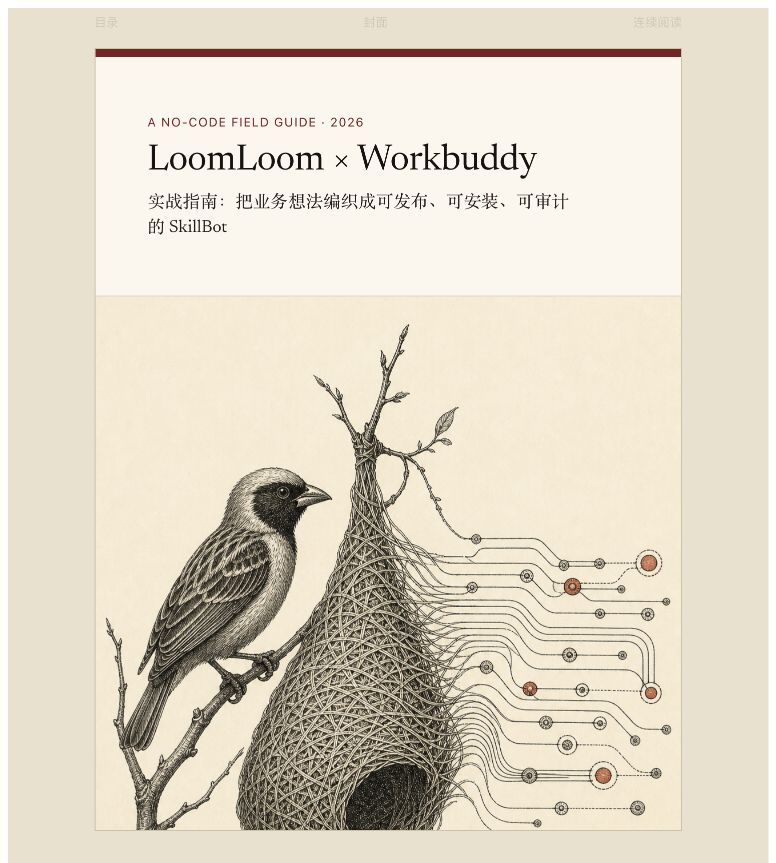
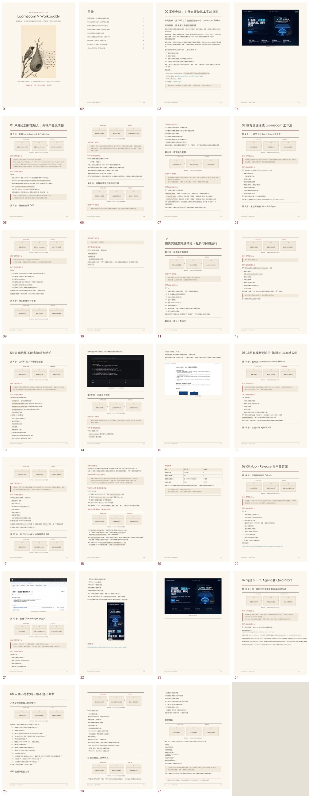

普通文档生成
- 自动摘要长文，内容缺失难以追踪
- 为适应固定页面而压缩正文
- 视觉完成后直接交付
- 只有成品，没有审计证据
Publishing workflow for local agents
Web Tutor Book Skill 从审读、内容保真、编辑规划和视觉制作，到质量审计与最终签发，对一本教程能否真正出版负责。


主编不以“页面已经生成”为完成信号，而以内容完整、读者可执行、成品可复验为交付标准。
它卖的不是排版，而是出版责任。
同一位本地主编，接受两种不同委托。桌面端并排比较，手机端通过标签切换。
接收 Markdown、PDF、DOCX、聊天记录或知识库素材，完成网页翻页版、连续阅读版、可搜索 PDF 与 EPUB。
审查 PDF、HTML 或 Markdown，按照目标用途检查教学闭环、事实、链接、视觉与技术质量。
不是一键生成后结束，而是一条带着检查点、退回修改和最终签发的出版流程。
定义用途、发布渠道和合格标准。
BRIEFED保存来源，提取事实、步骤、代码和表格。
INGESTED每个内容块都有页面归属与保留方式。
MAPPED设计章节、页型、素材和交付格式。
PLANNED先做完整首章，确认阅读和视觉方向。
CALIBRATED完成网页书、流程图、截图、封面与打印入口。
BUILT检查内容覆盖、任务闭环、浏览器、链接和 PDF。
AUDITED修复并复验，决定最终版本是否具备发布条件。
SIGNEDCONTENT FIDELITY
事实、步骤、代码、表格、限制条件和风险提示会被映射到具体页面。无法确认的内容保留原句，用户未批准的内容不得省略。
以下全部来自已经完成的 LoomLoom × WorkBuddy 实战指南，不使用虚构产品截图。


LoomLoom 批量视觉审计是可选的外部审稿能力。它提出候选，本地 Agent 必须回看高清原图后才能进入修复清单。
本地主编完成构建、页面编号和安全预检。
批量寻找遮挡、模板残留、图片误用与排版异常。
接受、重述或驳回云端候选，防止误判原因。
根据全部本地证据决定修改方式与发布结论。
请安装 GitHub 仓库中的 web-tutor-book Skill： https://github.com/gold3bear/web-tutor-book-skill 请先阅读仓库根目录的 SKILL.md，检查所有脚本和引用文件，再按照当前 Agent 平台支持的 Skill 安装方式，把整个仓库安装为名为 web-tutor-book 的本地 Skill。 不要只复制 SKILL.md；需要同时保留 agents、references 和 scripts 目录。安装完成后，请验证 Skill 可被识别，并告诉我安装路径和验证结果。